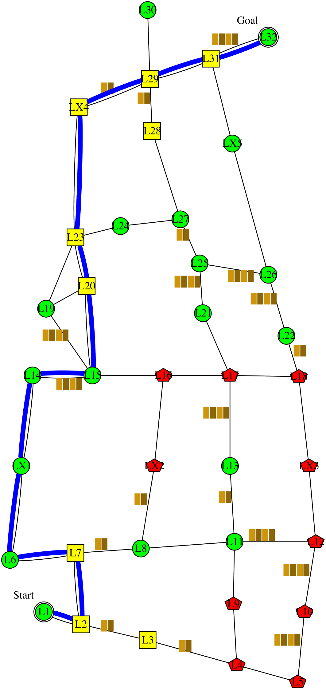
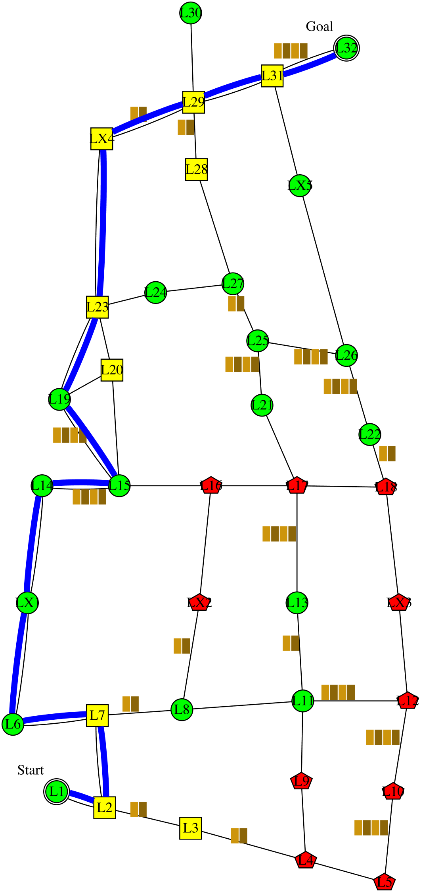
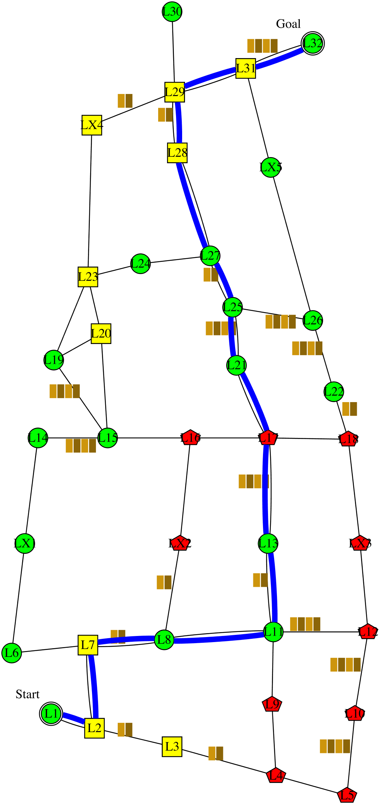

I'm planning to follow this policy . It is expected to have 1.8 collisions; take 161 minutes; and have intrusiveness-penalty of 4: be non-intrusive 11 steps, somewhat-intrusive 4 steps, and very-intrusive 0 step. It has the lowest expected intrusiveness. Alternatively, following this policy  would reduce the collision to 1.4 collisions, and reduce the time to 153 minutes. However, I didn't choose that policy because it would increase the intrusiveness to 5: non-intrusive 10 steps, somewhat-intrusive 5 steps, and very-intrusive 0 step. The decrease in collision, and the decrease in time are not worth the increase in intrusiveness. Alternatively, following this policy  would reduce the collision to 1.6 collisions. However, I didn't choose that policy because it would increase the time to 168 minutes. The decrease in collision is not worth the increase in time.